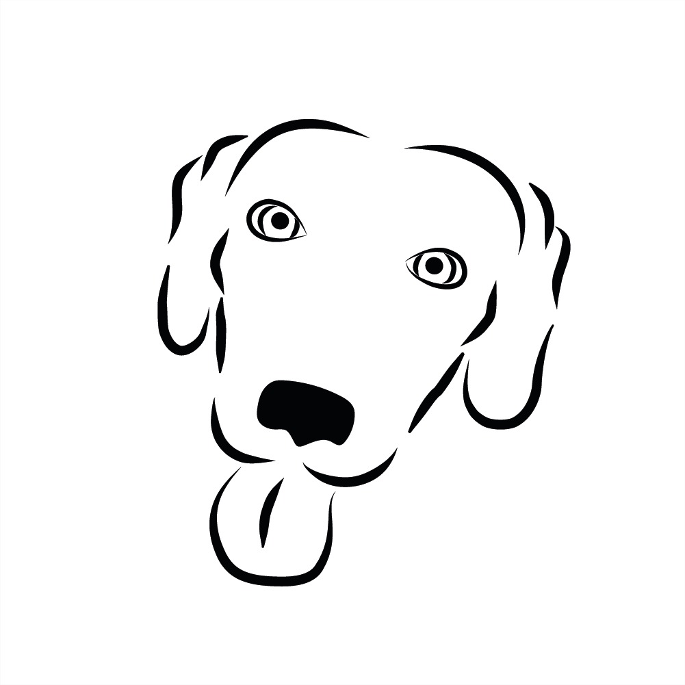
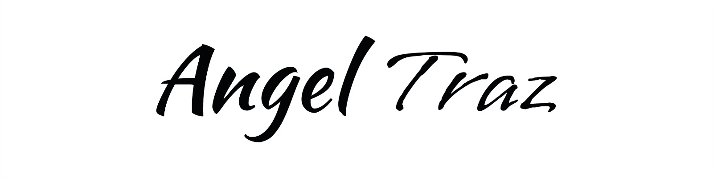
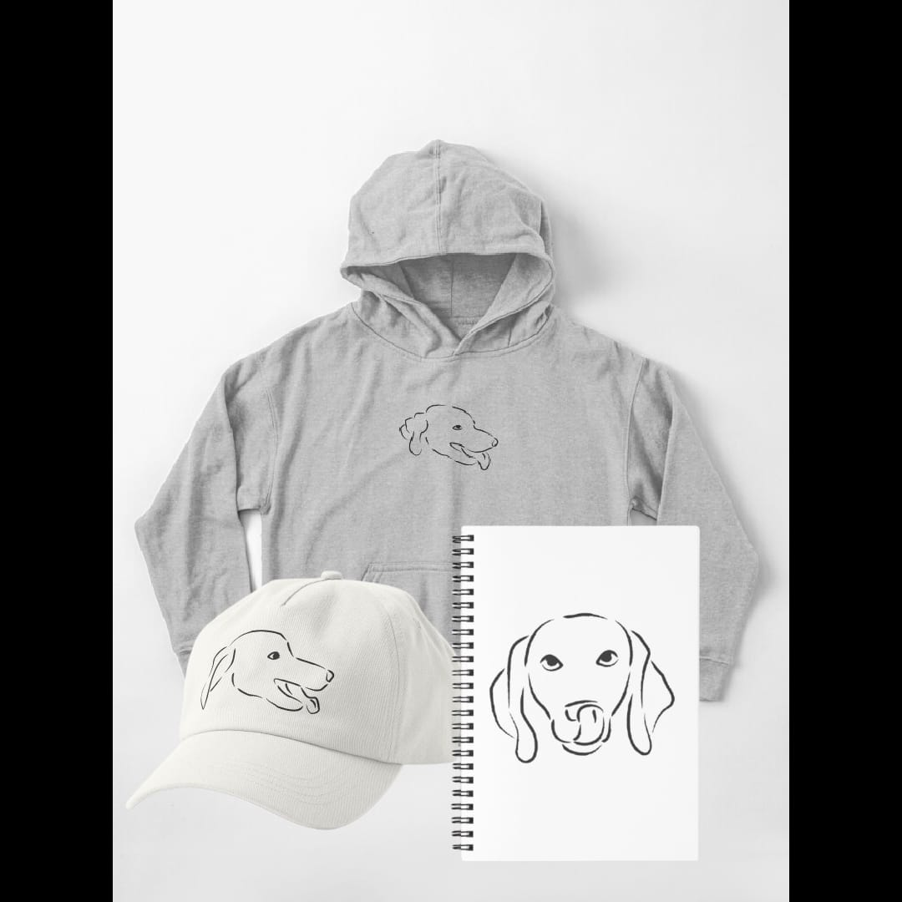
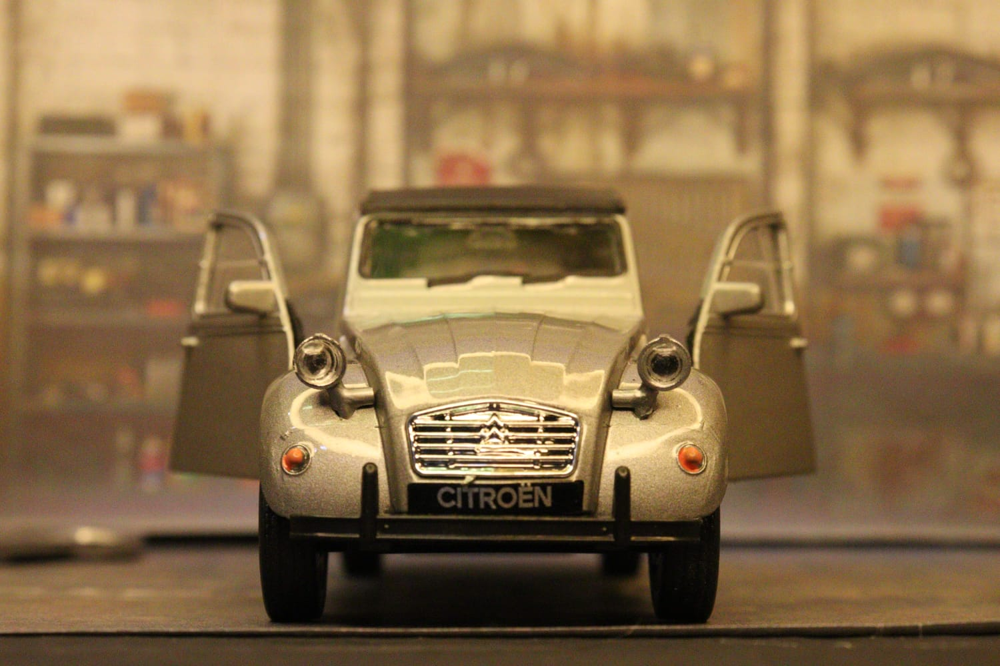
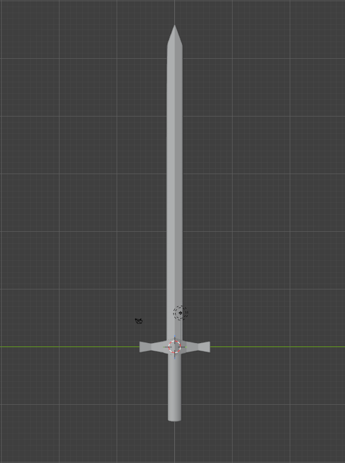

Diseño gráfico
Creo composiciones, ilustraciones y recursos visuales buscando que cada propuesta tenga una función y una identidad propia.



Convierto ideas en imágenes: diseño gráfico, POD, animación, fotografía y modelado 3D bajo una misma identidad visual.

Seis formas distintas de convertir una idea en imagen. Elige una categoría para ver en qué consiste.
Creo composiciones, ilustraciones y recursos visuales buscando que cada propuesta tenga una función y una identidad propia.

Llevo las ilustraciones y conceptos gráficos a productos físicos mediante Print on Demand, adaptando una misma idea a distintos formatos.



Trabajo con personajes, escenarios y elementos gráficos para construir piezas animadas y proyectos audiovisuales.
Llevo la narrativa visual al espacio físico, experimentando con iluminación, composición, escenarios y objetos.



Construyo objetos, personajes y escenarios desde una perspectiva tridimensional, ampliando las herramientas con las que desarrollo una idea.

Edito y monto piezas audiovisuales: ritmo, color y sonido trabajados juntos para narrar una idea completa, desde el primer corte hasta la entrega final.
Mi marca personal nace del interés por convertir ideas en imágenes.
El diseño gráfico es el punto de partida: desde la creación de identidades y piezas visuales hasta la ilustración y el desarrollo de conceptos propios.
A partir de ahí, el trabajo se expande hacia diferentes medios:
Creo composiciones, ilustraciones y recursos visuales buscando que cada propuesta tenga una función y una identidad propia.
Llevo las ilustraciones y conceptos gráficos a productos físicos mediante Print on Demand, explorando cómo una misma idea puede adaptarse a diferentes formatos y niveles de protagonismo.
El diseño también cobra movimiento. Trabajo con personajes, escenarios y elementos gráficos para construir pequeñas piezas animadas y proyectos audiovisuales.
Como siguiente área de exploración, busco llevar la narrativa visual al espacio físico, experimentando con iluminación, composición, escenarios y objetos.
El volumen abre otra posibilidad: construir objetos, personajes y escenarios desde una perspectiva tridimensional, ampliando las herramientas con las que puedo desarrollar una idea.
Monto y edito piezas audiovisuales, trabajando ritmo, color y sonido para narrar una idea de principio a fin.
Mi objetivo es que la marca funcione como un espacio de experimentación visual, donde diseño gráfico, ilustración, animación, fotografía, edición de video y 3D no sean áreas aisladas, sino distintas maneras de desarrollar y comunicar una idea.
¿Tienes un proyecto en mente? Cuéntame los detalles desde la página de contacto.